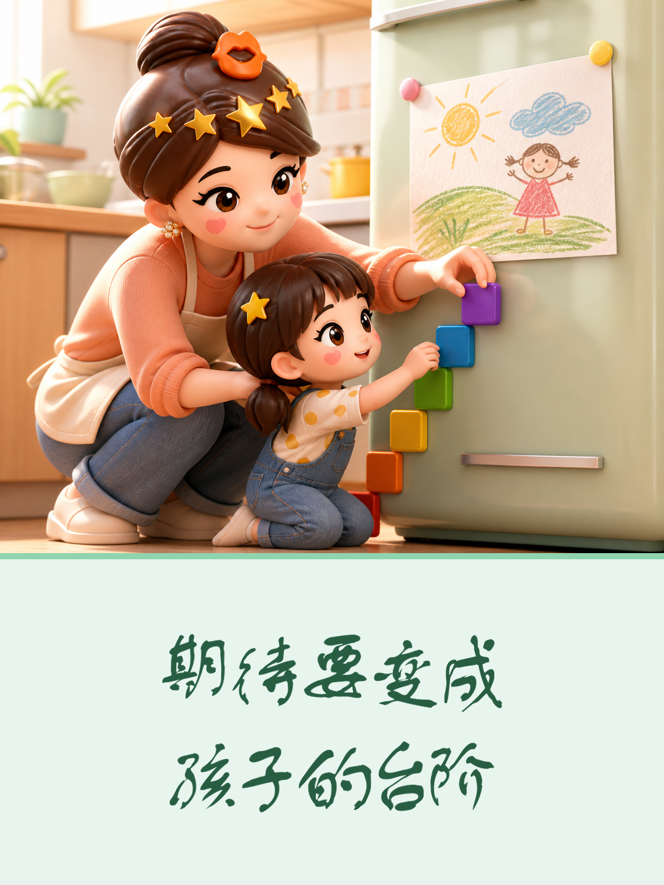
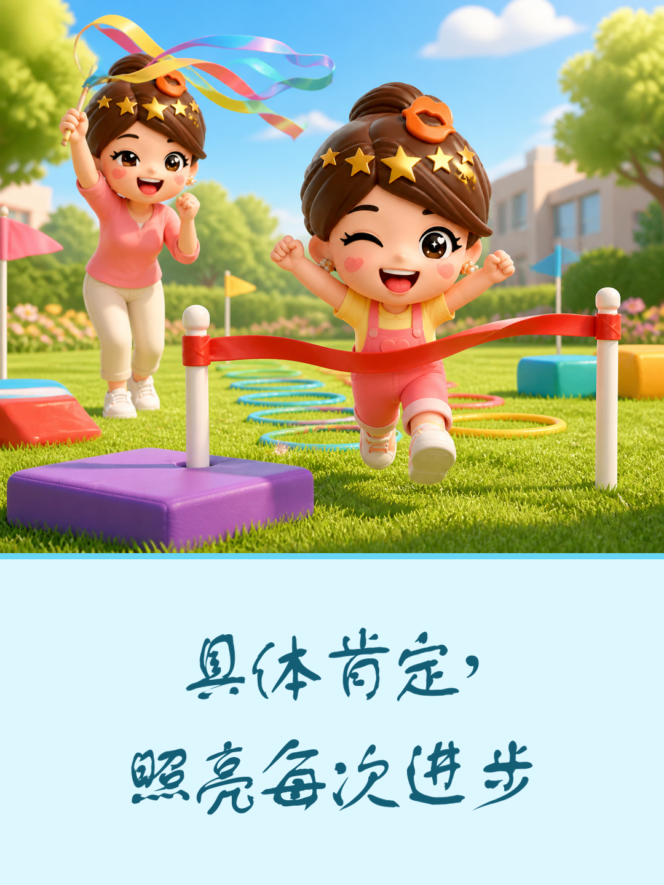
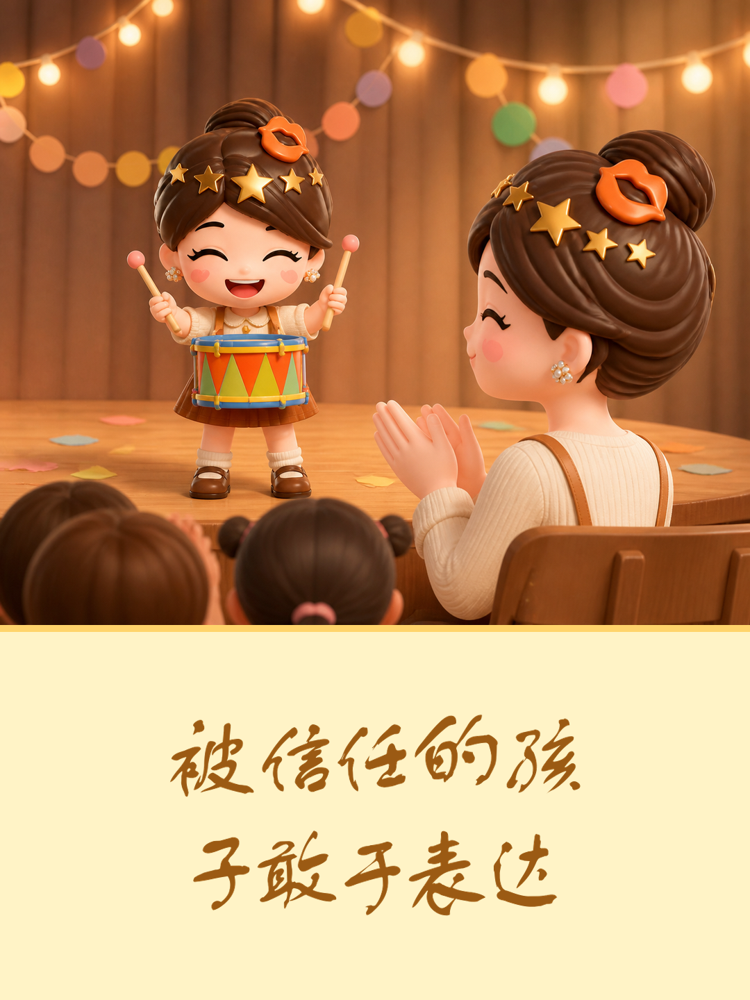

孩子的底气，藏在父母每天说的话里
孩子如何理解自己，常常藏在家里每天重复的语气中。
语言会成为内在旁白
父母随口的评价，孩子可能记很久。总听见否定，他会把困难当成自己的缺陷；得到清晰温和的提醒，他才懂得错误可以修正。

少些控制，多些空间
支持不是替孩子安排每一步。把期待拆成够得着的小目标，允许他试错并承担结果；父母只在需要时给方法，孩子才能形成判断力。
肯定要具体，边界要清楚
鼓励不是空泛夸奖。说清他哪里认真、比上次进步了什么，也讲明行为边界；孩子会相信努力有用，并知道怎样改。

先接纳，再讨论问题
孩子难过或犯错时，先听完感受，再谈事实和选择。被尊重不等于没有规则，却能让他敢表达、肯负责。

家里稳定的善意，会变成孩子面对世界的底气。